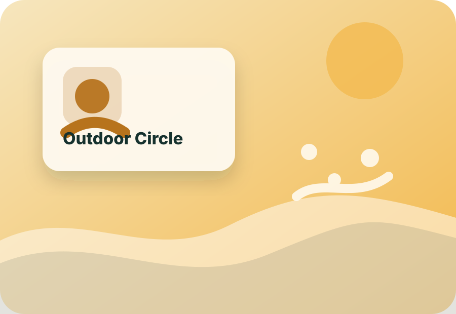
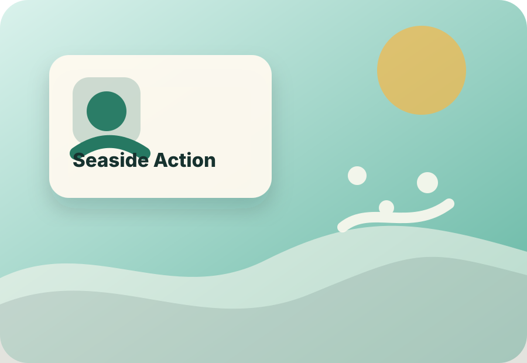

Activity gallery
Photos organized by activity and year.
This gallery is built for real evidence: 2025 archive photos, current activity photos, team planning moments, and public-space documentation across Baku.
8 photos visible
Eco2025
Cleanup Day
Use this for photos from cleanup walks, sorting stations, and public-space care.
Sport2025
Seaside Movement Day
Replace this with movement photos, route moments, warmups, and group shots.

Health2025
Outdoor Habit Circle
Show walking, stretching, sunlight, breathing, and practical habit-building activities.
Community2025
Team Planning
Document planning sessions, role division, reflection meetings, and project work.

Eco2026
Seaside Action
Use for before-and-after photos, route documentation, and environmental impact.
Community2026
Volunteer Moment
A space for photos of participants helping, organizing, guiding, and showing up.
Sport2026
Route Practice
Use for future runs, warmups, route testing, and participation proof.
Health2026
Habit Workshop
Use for future outdoor health activities and reflection circles.
Local upload preview
Add activity photos before publishing.
This uploader previews photos inside your browser only. A static HTML website cannot permanently save uploads without a backend. For the real public website, place final photos inside assets/images/gallery/ and replace the placeholder image paths in gallery.html.
Backend note: when you are ready, this can be connected to a real server/database so registrations, messages, and photo submissions are saved.
Local preview
Evidence matters
A strong initiative needs visible proof: people, places, actions, and progress over time.
Use this gallery to document real work and make Youth Collective feel active, credible, and growing.